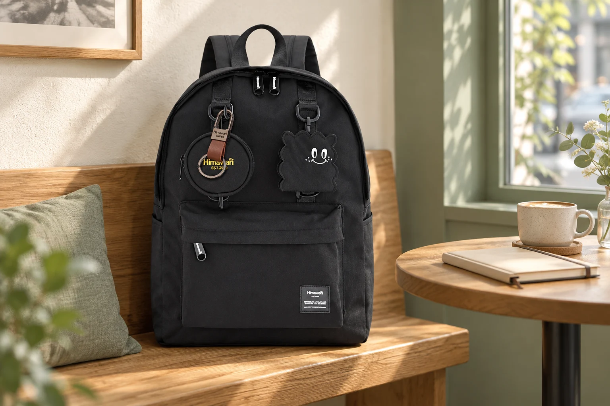

카페에서 백팩 어디에 둘까요? 자리 잡기부터 떠나기까지

카페에서 가방을 벗는 순간은 짧지만, 어디에 놓느냐에 따라 물건을 꺼내는 동선이 달라집니다. 의자 뒤에 걸어 두면 편해 보여도 내용물을 확인하기 어렵고, 테이블 가장자리에 두면 음료를 옮길 공간이 좁아집니다. 새 가방을 고르는 기준보다 지금 가진 백팩을 잠시 내려놓는 방법에 집중해 보세요.
1. 먼저 사람이 지나는 쪽을 비워두세요
앉기 전에 의자를 빼는 방향과 옆자리 사람이 드나드는 길을 봅니다. 가방 바닥이 통로로 튀어나오거나 어깨끈이 바닥을 가로지르지 않게 안쪽으로 모으세요. 매장에 별도 보관 바구니가 있다면 사용 가능 여부와 안쪽의 물기부터 확인합니다. 다른 손님의 자리를 가방으로 차지하지 않는 것도 기준입니다.
2. 눈과 손이 닿는 안정된 자리를 고르세요
허용된 벤치의 벽 쪽이나 비어 있는 보관 공간처럼 가방 전체를 받칠 수 있는 곳을 찾습니다. 바닥에 두어야 한다면 물기와 이물질을 먼저 확인하고, 가방이 넘어지지 않는 방향으로 놓습니다. 사진처럼 벤치를 쓰는 경우에도 다른 손님의 좌석을 방해하지 않는지 먼저 판단하세요. 의자 등받이에 무거운 가방을 걸어 균형을 바꾸는 배치는 피하는 편이 좋습니다.
3. 음료를 놓기 전에 필요한 것만 꺼내세요
노트나 안경처럼 곧 사용할 물건을 먼저 꺼내고 메인 지퍼를 닫습니다. 열린 가방 바로 위로 음료를 넘기지 않도록 컵을 둘 자리와 물건을 꺼낼 방향을 나눠보세요. 가방을 테이블에 올릴 수 있는지는 매장 안내를 따르고, 가방 바닥이 음식이나 식기에 닿지 않게 합니다.
4. 충전할 때는 선이 통로를 건너지 않게 하세요
콘센트 위치 때문에 가방과 충전기를 멀리 떨어뜨려 두면 선이 발에 걸리거나 물건을 당길 수 있습니다. 허용된 콘센트와 자신의 자리 사이에서 짧게 정리하고, 여유 선을 가방 끈과 섞지 마세요. 자리를 비울 때는 휴대전화와 지갑 등 귀중품을 챙기며, 가방이 보인다는 이유만으로 안전하다고 단정하지 않습니다.
5. 일어나기 전에 세 곳을 확인하세요
테이블, 가방을 둔 자리, 의자 아래를 순서대로 봅니다. 충전기 플러그와 케이블 끝을 모두 챙겼는지 확인한 뒤 지퍼를 닫고 가방을 멥니다. 그다음 의자를 원래 위치로 돌려놓으면 바닥에 떨어진 작은 물건을 마지막으로 확인하기 쉽습니다. 출발 직전에 가방을 다시 펼치는 일을 줄여주는 짧은 순서입니다.
참고·안내
- Himawari 실제 제품 정보
- 사용 환경과 제품 구조에 따라 적용 방법이 다릅니다. 제품 안내와 장소별 이용 수칙을 우선하세요.
- 대표 이미지는 실제 제품 사진을 참조한 연출 이미지입니다.
자주 묻는 질문
보관 바구니가 없으면 어떻게 하나요?
매장 안내를 먼저 따르고, 자신의 자리 안에서 통로를 막지 않는 안정된 공간을 고르세요. 바닥의 물기와 오염을 확인하고 끈이 밖으로 나오지 않게 정리합니다.
작은 가방은 의자 뒤에 걸어도 되나요?
의자의 구조와 내용물 무게에 따라 균형이 달라집니다. 걸 수 있다고 단정하지 말고, 가방 전체를 받치는 자리와 눈에 보이는 위치를 우선하세요.